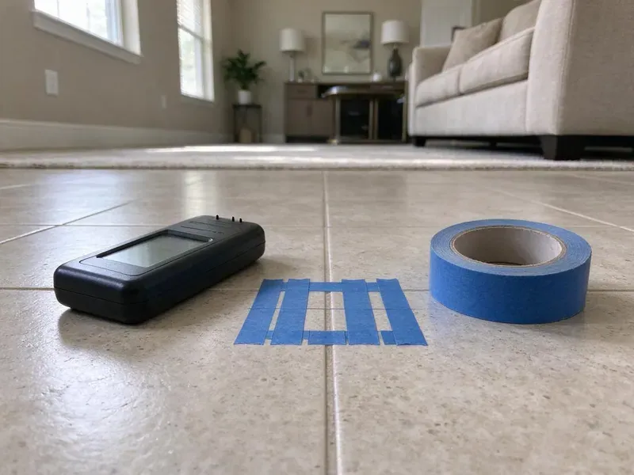

Drains Camera Inspection in Metairie, LA
For lasting solutions to drainage problems in Metairie, LA, Beau's Plumbing uses advanced camera technology to locate and identify issues fast.
- Fast, Accurate Diagnostics
- Skilled Plumbers
- Clear, Plain-English Reports
- No-Dig Inspections

See Exactly What Is Inside Your Drains in Metairie, LA.
Our team is ready to provide precise camera inspection services to identify your drain issues.
Professional Drains Camera Inspection in Metairie, LA for Clear Diagnosis
Beau's Plumbing provides advanced drains camera inspection services across Metairie, LA. This diagnostic tool allows us to visually inspect the interior of your drain and sewer lines, identifying blockages, damage, or other issues without disruptive digging.
Our expertise includes:
- Sonde locating to mark defect location and depth on surface
- Find lost items or debris within pipes.
- Inspect pipe integrity for real estate transactions.

Additional Plumbing Maintenance Services in Metairie, LA
Our maintenance and specialty plumbing services in Metairie, LA protect your home year-round and extend the life of every system.


Customers
Why Choose Beau's Plumbing for Drains Camera Inspection in Metairie, LA?
A camera inspection costs far less than digging in the wrong spot. It turns a vague drain problem into a clear repair plan.
- Unbiased Findings, We report what the camera shows, whether or not a repair is needed.
- Detailed Reporting, You'll receive a clear report and video footage of the inspection, giving you full visibility into your plumbing system.
- HD Footage, Our cameras record sharp, well-lit video that plainly shows pipe condition.
Citywide Coverage
Beau's Plumbing proudly serves every neighborhood and surrounding community in Metairie for all your drains camera inspection needs. Whether you're in an older home with cast iron pipes or a newer build, we understand the many plumbing systems across the area.
Experienced Team
Our camera technicians have reviewed thousands of feet of pipe footage. They can tell a minor scale deposit from a serious crack and know which findings need prompt attention.
Safety-First Approach
All drains camera inspections by Beau's Plumbing are conducted with strict attention to safety protocols and local plumbing codes in Metairie, LA. We put first the safety of your property and our technicians.
Trusted Certified Metairie Plumbing Services Professionals
At Beau's Plumbing, we take pride in providing licensed, certified plumbing services throughout Metairie, LA. Backed by recognized industry credentials, our experienced plumbers combine technical skill with genuine customer care. Whether it is repair, installation, or maintenance, we follow strict safety and quality standards to deliver lasting results you can trust.
Call Us Now PHCC Plumbing Contractor Recognition
PHCC Plumbing Contractor Recognition Better Business Bureau (BBB) Accreditation
Better Business Bureau (BBB) Accreditation Angi Certified Pro
Angi Certified Pro ISO 9001 Quality Management Certification
ISO 9001 Quality Management CertificationTrusted Drains Camera Inspection Services in Metairie, LA
Residential Drain Camera Inspection in Metairie
For homeowners in Metairie, we offer complete residential drain camera inspection services. This helps identify common issues like grease buildup, hair clogs, or even toy blockages in your kitchen, bathroom, or main sewer lines. Our cameras navigate easily through standard residential piping, providing clear visuals of any obstructions or damage. We make sure your home's plumbing system is functioning correctly, preventing future costly repairs.

Kitchen and Branch Drain Camera Inspection in Metairie
Smaller cameras fit through kitchen, bathroom and laundry lines inside the house. They help explain recurring clogs and slow drains caused by grease buildup, scale or a broken fitting under the slab. We can see where branch lines tie into the main and whether they slope correctly. This is especially useful before a kitchen or bathroom remodel.
Camera Inspection for Slab Leaks and Under-Slab Drains in Metairie, LA
Louisiana has many older homes with cast iron drains and galvanized supply pipes that corrode faster in warm, wet conditions. In slab homes, drains run under concrete where they cannot be seen. Cracked or separated under-slab drains can leak into the soil and contribute to foundation movement. A camera shows the location of the break and lets us plan the smallest possible access cut or a reroute. This avoids tearing up more flooring than necessary.
Pre-Purchase Sewer Scope in Metairie, LA
Standard home inspections usually do not include the sewer line, yet sewer repairs can cost thousands. A pre-purchase sewer scope shows the condition of the lateral before you close. Older homes with clay or Orangeburg pipe benefit most. Our findings can support repair requests or price negotiations with the seller.
Post-Repair and Post-Jetting Verification in Metairie
After a root cutting, hydro jetting or pipe repair, a follow-up camera pass confirms the work was done right. You see that the roots are gone, the grease is cleared or the new section is properly aligned. This step gives peace of mind and documents the condition for future reference. It is also helpful when a warranty or landlord agreement calls for proof.
Post-Repair Drain Inspections in Metairie
After any significant drain repair or cleaning service in Metairie, Beau's Plumbing offers post-repair camera inspections to confirm the effectiveness of the work. This confirms that the blockage has been completely removed, the pipe integrity is restored, and there are no new issues. It's a critical step to protect the longevity and reliability of your plumbing system and gives you peace of mind.
Post-Repair Inspection in Metairie
After a major drain repair or pipe replacement in Metairie, a post-repair camera inspection confirms the work was done correctly and the pipes are fully functional. This gives you confidence in the quality of the repair and verifies that no new issues were introduced during the process. It's an important quality assurance step we often recommend.

Locating Lost Items with Camera in Metairie, LA
Accidentally dropped a valuable ring or small toy down a drain in Metairie, LA? Our drain camera can often locate and help retrieve lost items without having to dismantle entire plumbing sections. The precise visual guidance allows our technicians to find the item's location and attempt retrieval, saving you from costly pipe disassembly or loss.
Drains Camera Inspection Close to Home in Metairie, LA
When you search for 'drains camera inspection near me' in Metairie, LA, Beau's Plumbing is your trusted local expert. Our well located teams provide a rapid response to your plumbing diagnostic needs. We are familiar with the challenges of Metairie's plumbing infrastructure.
If you're searching for 'drains camera inspection near me' in Metairie, LA, look no further than Beau's Plumbing. Our local team is ready to respond quickly to your plumbing needs, using advanced diagnostic tools to resolve your drainage issues efficiently. We understand the challenges faced by homeowners and businesses in the community.
Beau's Plumbing at a Glance
- Fully licensed plumbing team covering Metairie, LA
- Same-day appointments and 24/7 emergency response
- Upfront, flat-rate pricing before work begins
- 4.8-star rated by 578+ Louisiana customers
Metairie Map
Metairie Information
- Population
- 143,507
- Area codes
- 504/985/225
- Service area
- Metairie and communities within 40 miles
- Nearby
- Kenner, Marrero, New Orleans, Mandeville
Homes are commonly built on slabs or raised pier foundations, and raised homes keep much of the plumbing easier to reach. Regular drains camera inspections help homes in Metairie catch pipe damage early and prevent expensive slab leaks.
Expert Services
Trust our professionals for reliable Beau's Plumbing solutions in Metairie, LA.
Our Specialized Plumbing Services in Metairie, LA
At Beau's Plumbing, we provide a complete range of plumbing services across Metairie, LA. From leak detection to full system installations, our team ensures fast, precise, and affordable service for both residential and commercial properties. Explore our core services below:


How Our Drains Camera Inspection Process Works in Metairie, LA
Our camera inspection process is fast, clean and designed to give you clear, usable answers.
Request a Quote
Call (504) 317-6869 and tell us whether you need a sewer scope, a drain diagnosis or a pre-purchase inspection. We confirm the price and book a visit.
Run the Camera
We insert the camera through a cleanout or fixture and record the full run of pipe. Any defect is located and marked on the surface.
Review the Footage
We walk you through the video and explain each finding in plain language. You receive the recording and recommendations for any needed repairs.
Frequently Asked Questions About Drains Camera Inspection in Metairie
A standard drain or sewer camera inspection usually costs $150 to $400. Adding locating and depth marking usually brings the total to $250 to $500. If we clear the line first, cleaning is billed as a separate item.
While small, consumer-grade drain cameras are available, they lack the quality, reach, and diagnostic capabilities of professional equipment. A DIY approach may miss important details or misinterpret findings. Professional plumbers have the experience to accurately interpret the footage and recommend appropriate solutions, which is vital for the varied soil and foundation conditions in Metairie.
Our drain camera inspection service itself is a diagnostic tool, so it doesn't carry a separate warranty on the service. However, any later repair work recommended and performed by Beau's Plumbing will come with its own warranty, giving you confidence in our workmanship and materials.
Recurring clogs, slow drains in multiple fixtures, foul odors coming from drains, gurgling sounds from toilets or drains, and sewage backups are all strong signs that you could benefit from a drain camera inspection in Metairie. These symptoms suggest a deeper issue that a camera can reveal.
Yes, absolutely. A drain camera inspection is an effective way to locate lost items like jewelry, toys, or other small objects that may have accidentally fallen into your drains. Once located, our technicians can often retrieve the item with specialized tools, saving you from a costly replacement.
Most residential drain camera inspections take between 30 minutes and 1 hour, depending on the length and complexity of the pipe system. More extensive sewer line inspections or those involving multiple access points might take slightly longer, up to 2 hours.
Yes. Tree root intrusion and aging sewer lines cause trouble in many neighborhoods. Homes are commonly built on slabs or raised pier foundations, and raised homes leave much of the plumbing easier to reach. A camera inspection is key for accurately diagnosing these local challenges.
No, a drain camera inspection is a non-invasive and clean process. We usually access your pipes through existing cleanouts, which are usually located outside or in a basement. There's no need for digging or demolition, minimizing disruption to your home or business in Metairie.
What People Are Saying About Our Plumbing Experts?

Laura S.
I scheduled a water heater replacement, and the team made the process smooth and affordable. The new unit works perfectly, and they cleaned up after completing the job.
Water Heater Replacement · Marrero, LA
Mark T.
When our office needed drain cleaning, Beau's Plumbing provided quick, reliable service. The plumber arrived on time and made sure every drain flowed perfectly before leaving. Very satisfied.
Drain Cleaning · Slidell, LA
Patricia H.
We had a slab leak that two other companies could not find. Beau's Plumbing located it in under an hour, explained our options, and the price matched the quote to the dollar.
Slab Leak Repair · Kenner, LASofia M.
Two new toilets installed in one visit, no mess left behind, and the tech even adjusted a faucet he noticed was dripping. Fair pricing and really friendly.
Toilet Installation · Mandeville, LA
Robert G.
The trenchless sewer replacement saved our front yard. They walked us through the camera inspection footage first so we knew exactly what we were paying for.
Sewer Line Replacement · Mandeville, LAJames P.
Our commercial plumbing system had a leak under the sink, and Beau's Plumbing handled it professionally. The plumbers arrived quickly and restored everything without disruption to our customers.
Commercial Plumbing · Kenner, LA